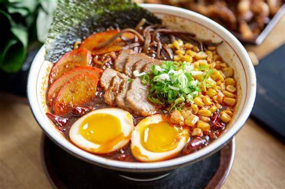
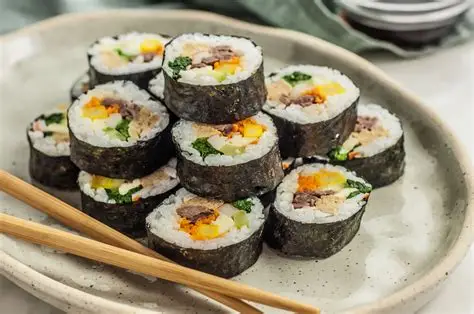

Tokyo – Foods

Ramen
Delicious noodle soup, a classic Japanese comfort food.

Sushi
Fresh seafood with vinegared rice, world-famous Japanese dish.

Takoyaki
Fried octopus balls with a crispy exterior and soft interior.